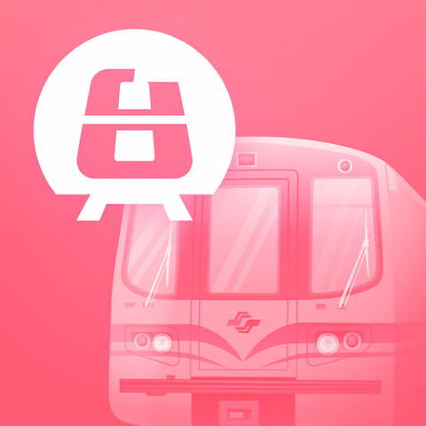
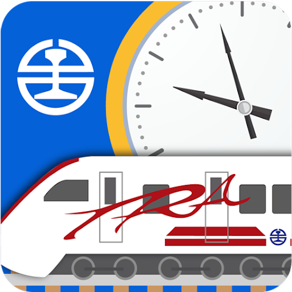

外國旅客必備數位工具
讓您的台灣之旅更順暢！以下為您整理出在台灣最實用的交通、美食與生活 APP。
地圖與綜合導航

Google Maps
綜合導航具有導航、查詢大眾運輸路線與即時路況等工具，是找尋地標的必備工具。
Google 翻譯
語言翻譯支援文字、語音與圖片即時翻譯（菜單掃描），是跨越語言障礙、與在地店家溝通的好幫手。
大眾運輸與火車
Bus+
公車動態全台公車動態即時查詢，等公車必備神器，介面乾淨好用。

台北捷運通
捷運路線提供台北捷運路線圖、票價查詢及首末班車時間，在複雜的車站內不怕迷路。

台鐵e訂票
火車訂票台灣鐵路官方APP，提供查詢時刻表、線上訂票，並可開啟手機電子車票進出站。

T Express
高鐵訂票台灣高鐵官方APP，手機直接買票，進站只要刷手機條碼，跨縣市移動最方便。
叫車與單車租借
Uber
叫車載客在台灣的系統與國外完全相同，綁定信用卡付款，不怕語言不通或被繞路。
YouBike 2.0
共享單車全球馳名的微型單車租借系統好騎無比，在大稻埕小巷弄穿梭的絕佳交通工具。
現金提款與換匯指南
雖然大稻埕許多特色店家已提供電子支付或信用卡，但傳統小吃、夜市等仍只收現金。以下是獲取新台幣的最方便方式：
匯率陷阱！避免選擇動態貨幣轉換 (DCC)
當您在 ATM 提款或刷卡時，如果螢幕詢問您要使用「當地貨幣(台幣)」還是「母國貨幣」結帳，請務必選擇「新台幣 (TWD) / 本國貨幣」。若選擇母國貨幣（即動態貨幣轉換 DCC），ATM 將會使用極差的匯率計算，您可能會因此多付 3%~7% 的隱藏費用。
24小時便利商店跨國提款
台灣的便利商店密集度極高，是外國旅客領取現金最方便的管道。
- 哪裡可以領？尋找 7-ELEVEN (內建中國信託 ATM) 或 全家便利商店 (內建台新或國泰世華 ATM)。大稻埕周邊步行5分鐘內皆有便利商店。
- 支援卡片：機台上若貼有 Visa, Mastercard, PLUS, Cirrus, UnionPay 等標誌，即可使用國外提款卡領取新台幣(TWD)。
- 手續費：台灣本地銀行通常會收每筆約 NT$100 的設備手續費（您的發卡銀行可能還會收取跨國手續費，建議一次領取足夠金額）。
實體銀行換匯
如果您手邊持有外幣現鈔（如美金、日圓、歐元）需要兌換成新台幣，前往銀行就有提供外匯業務的實體銀行。
- 第一銀行 大稻埕分行：
台北市大同區迪化街一段 63 號（迪化街主街上）。 - 臺灣銀行 延平分行：
台北市大同區南京西路 163 號（換匯免手續費）。 - 營業時間：平日（週一至週五）09:00 - 15:30，週末與國定假日休息。
- 注意事項：在台灣的銀行辦理任何換匯業務，都規定必須出示護照正本 (Passport)。實際匯率與手續費，依各分行現場公告為主。
簡單明瞭的外幣現鈔換台幣指南
為了因應大稻埕龐大的觀光人潮，如果您急需小額現金又逢銀行下班時間，可以尋找自動兌幣機（例如：新光銀行會有外幣兌換機）。部分據點設置專屬台灣與外國旅客可操作的兌換機，支援美金、日幣等主流幣種直接兌換新台幣，填補晚間逛街無處換匯的空窗。
1. 換匯流程
- 準備物品：帶好「外幣現鈔」與「身分證」（外籍人士帶護照或居留證）。
- 選擇地點：前往有外匯業務的銀行或郵局。
- 臨櫃辦理：抽號碼牌 ➔ 告訴行員要「外幣換台幣」 ➔ 填寫外匯買賣水單 ➔ 行員驗明鈔票真偽與計算金額 ➔ 領取台幣現金。
2. 手續費怎麼算？
- 完全免費：市區的一般「臺灣銀行」、「兆豐銀行」或指定「郵局」（郵局只收美金、日圓、港幣、歐元、人民幣）。
- 要收手續費的情況：機場櫃檯（約 100 元）、一般民營銀行（約 100～300 元）、特殊舊版或破損鈔票。
3. 三大注意事項
- 銀行不收硬幣：台灣所有銀行和郵局只收紙鈔，外國硬幣無法兌換。
- 鈔票不能太破舊：有破洞、明顯污漬、塗鴉或撕裂修補過，銀行可能拒收或加收處理費。
- 匯率看「現金買入」：請對照匯率看板的「現金買入」欄位，代表銀行用現金向你買進外幣的價格。